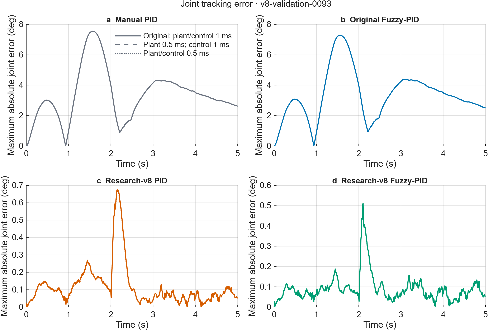
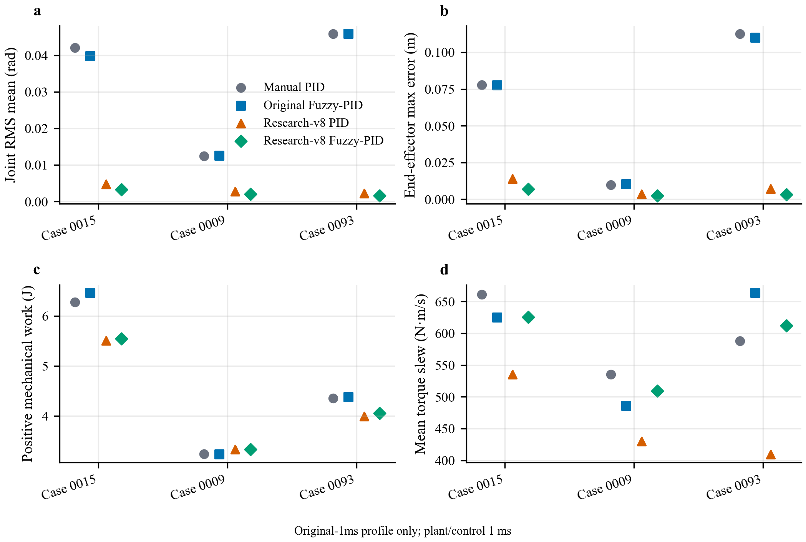
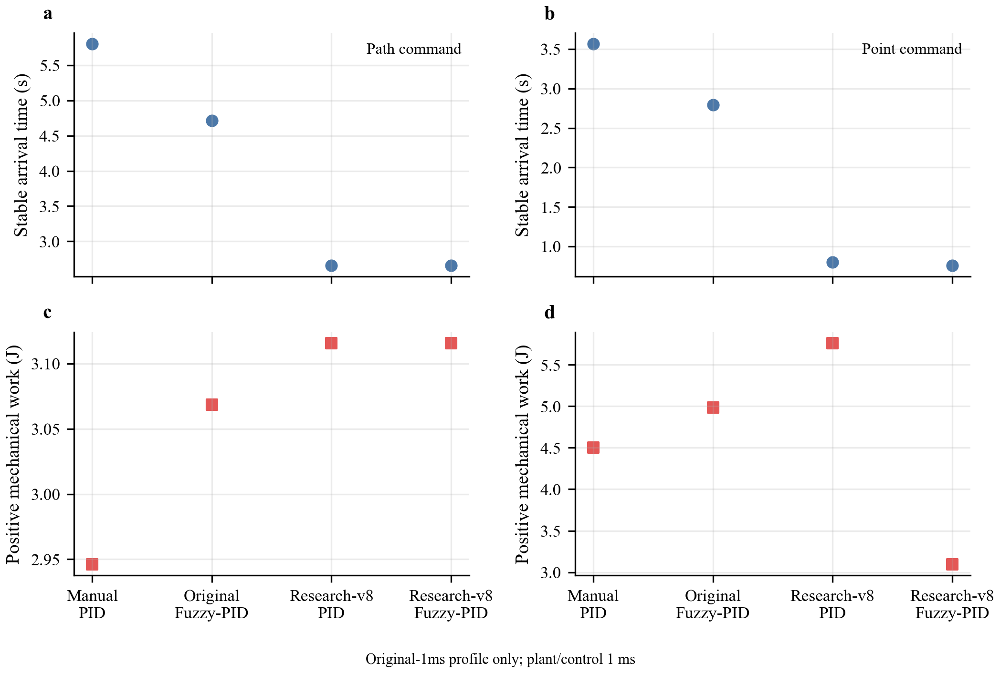
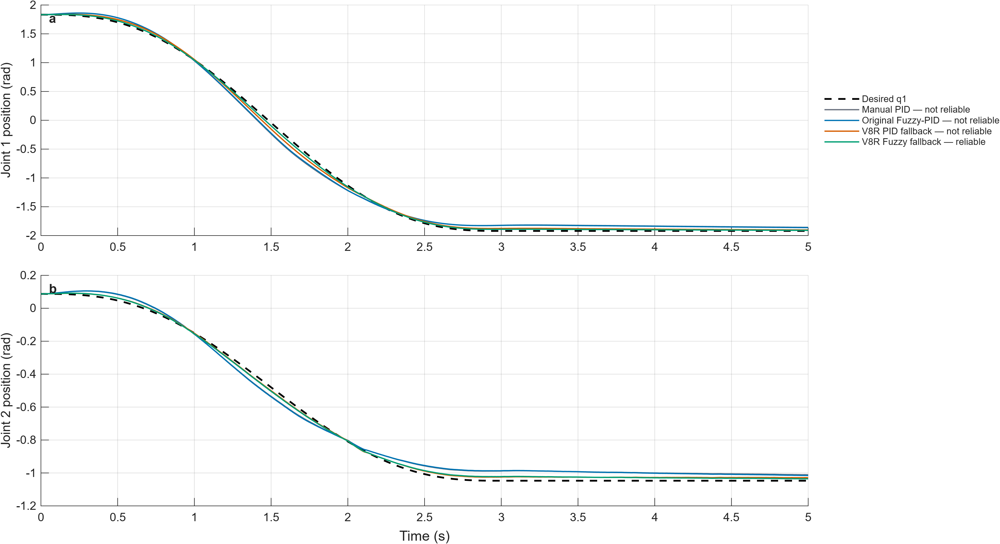
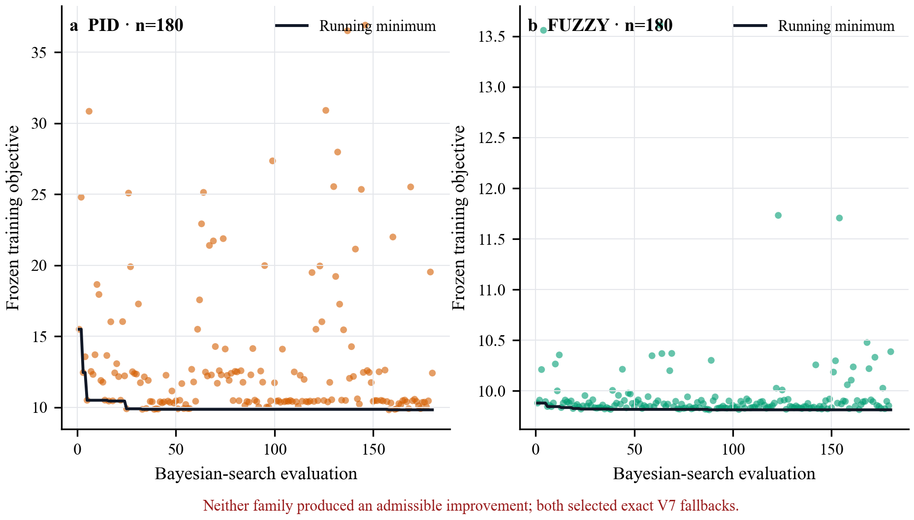

Nonlinear 2-DOF dynamics
MATLAB, Simulink, and Simscape Multibody models include configuration-dependent inertia, gravity, friction, payload, joint limits, and torque saturation.
How much of a successful robot trajectory survives a change in the simulation clock? I built a torque-limited, nonlinear two-link manipulation framework to study tracking, reliability, and the limits of its numerical evidence.
Supervised by Dr. Liangcai Tan · Archimedes Controls Corp. · Remote
First-author manuscript in preparation · Simulation study
17.9% to 50.9% reliable task success. On an earlier held-out set of 112 requested simulation tasks, the original Fuzzy-PID succeeded in 20/112 and the research controller in 57/112 under the same reliability criteria, a 33.0 percentage-point gain. This requested-task measure includes pre-execution rejections and belongs to a separate validation protocol.
90.7% mean paired reduction in joint RMS tracking error. Against the initial manually tuned PID on the same 1 ms simulation grid, the research Fuzzy-PID reduced error by 92.1% in the nominal case, 83.5% with noise and disturbance, and 96.4% in the long-travel case. The mean gives each of these three prespecified cases equal weight.
78.7% shorter stable-arrival time; 31.3% less positive mechanical work. In one matched endpoint-only task, the research Fuzzy-PID reached the target in 0.760 s versus 3.565 s and recorded 3.094 J versus 4.502 J for the manual PID baseline.
The 112-task success rates are descriptive held-out validation results; the confirmation gate failed, so no confirmation set was run. The 90.7% figure summarizes tracking error in three selected simulation cases, not an overall task-success rate or a population estimate. The endpoint case also had a higher squared-torque integral, so lower positive work does not establish lower electrical energy or an improvement on every actuation metric.
MATLAB, Simulink, and Simscape Multibody models include configuration-dependent inertia, gravity, friction, payload, joint limits, and torque saturation.
Torque-aware PID and Mamdani Fuzzy-PID track retimed joint and Cartesian references with inverse-dynamics feedforward, filtering, and anti-windup.
Earlier phases evaluated bounded candidate controllers against tracking and actuator criteria. The latest numerical study keeps four controllers fixed; it does not tune or select a new one.
Separate studies vary payload, robot configuration, model parameters, disturbance, sensing noise, and torque availability. The latest study specifically probes numerical time-step and feedback-period sensitivity.
Every graphic below comes from the recorded simulation pipeline. The latest numerical-study figures are kept separate from earlier tuning and tracking examples.






The latest study selected five cases before inspecting their outcomes and replayed four fixed controllers at three time profiles: original 1 ms, plant-only 0.5 ms, and coupled plant-and-controller 0.5 ms. All 60 runs and all 40 refinement comparisons completed. The plant-only comparison was stable in every selected pair; the six sensitive coupled pairs identify a feedback-sampling question for follow-up.
This is a local numerical diagnostic, not a new controller-performance ranking. This study performed no optimization, admitted no new controller, opened no confirmation set, and does not establish physical-robot reliability. The manuscript is in preparation.
I’m interested in MS and PhD research opportunities in robotics and AI.
Zhenghao@connect.hku.hkBased in Hong Kong
Computer Engineering · HKU